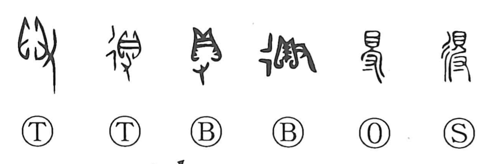

得

Kun: eru, uru | On: toku
to obtain ・ to gain ・ to be able to ・ to understand ・ to attain enlightenment
Explanation
The old forms of 得 show 貝, a valuable shell, taken in a hand, 又. Some forms add 彳, movement along a road. Together they show going elsewhere and obtaining the shell, which served as wealth or currency. The modern 寸 continues the hand.
得 first means to acquire or gain possession. Its early uses can include taking property from others; the emphasis is on bringing the valuable thing into one’s own hand.
Acquisition broadens beyond material goods. A desired outcome can be attained, and a meaning can be grasped or understood. The character therefore expresses getting, achieving, or coming to know something, with the shell in the hand as its concrete starting point.